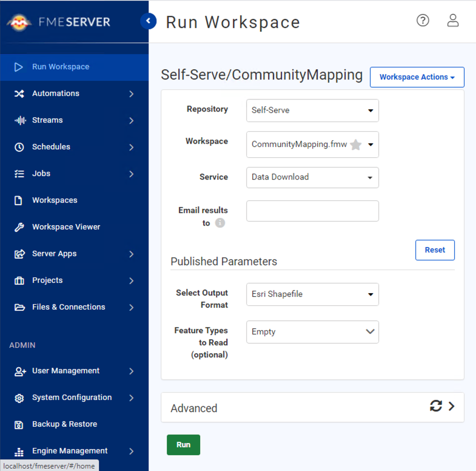
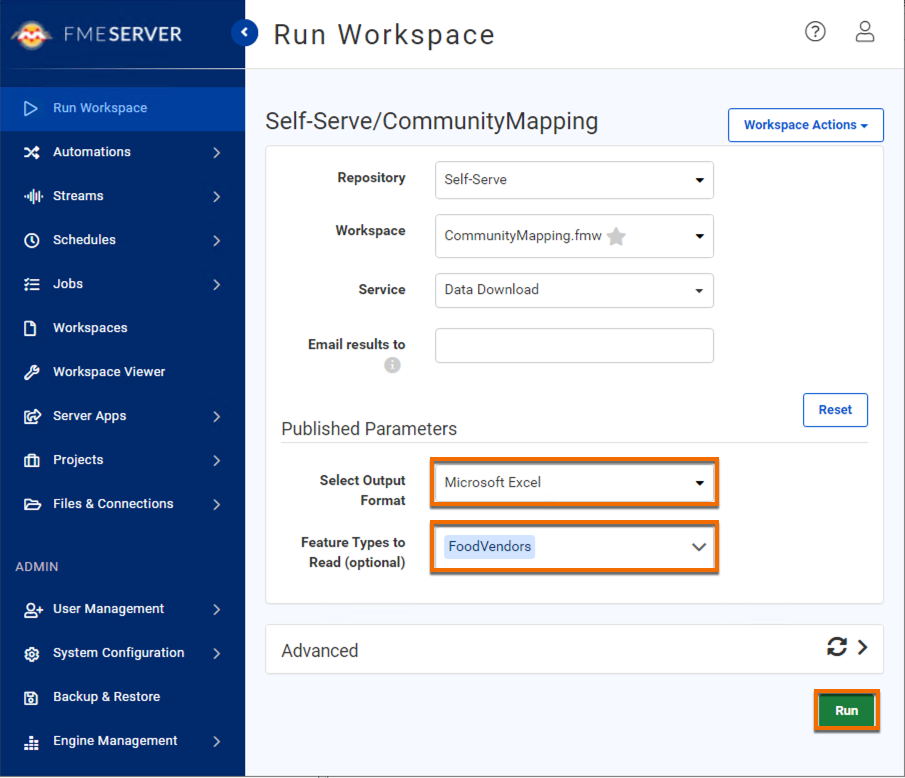
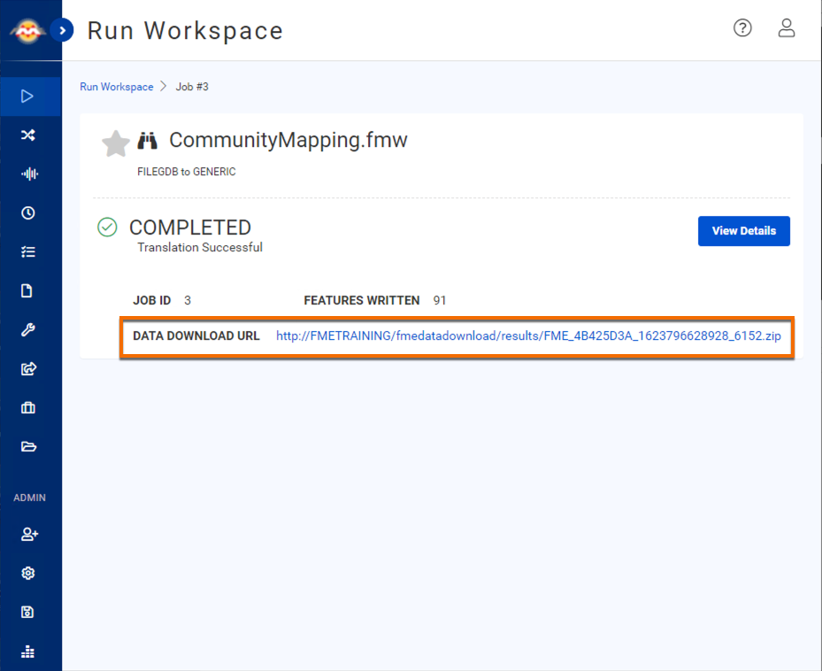
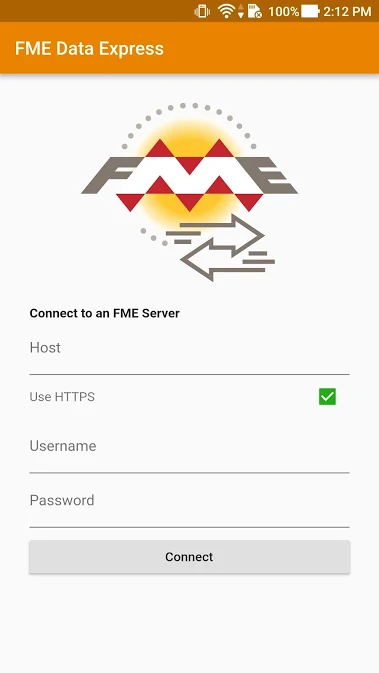

After completing this unit, you’ll be able to:
Frank is ready to test his self-serve workspace. He clicks the link from the Translation Log (http://localhost/fmeserver/#/workspaces/run/Self-Serve/CommunityMapping.fmw/) to open the workspace in FME Server (2022.0 or later).
He logs into FME Server and sees the Run Workspace page.

He leaves the default settings at the top part of the interface. He selects "Excel" from the Output Format drop-down. He wants a current extract of the FoodVendors table, so he looks at the Feature Types to Read Published Parameter. He clicks the drop-down and selects “FoodVendors” from the list. Then he clicks Run to request his data.

Because he used the Data Download service, when the workspace finishes running, he is taken to a page with a link to a ZIP file of the results of the workspace. He clicks it to download.

He finds the ZIP file in his local Downloads folder and extracts it. He has received the FoodVendors data as an Excel file called Training.xlsx. Now he can send the self-serve link to any end-user and they can download their desired data.
Fatima is one of Jennifer and Frank’s colleagues. She works as a Business Data Analyst at the city’s Business License Office. She often needs to add data to the FoodVendors feature class when she is out of the office doing business license inspections. Frank sets up FME Data Express on her tablet (available on Android or iOS) so she is able to access FME Server on-the-go. Using FME Data Express, she can run a different workspace designed for data submission, which will automatically read her GPS coordinates and use them to create a point feature.
FME Data Express lets mobile users run any workspace published to FME Server, letting them get access or create data on the go. It can also allow users to share their location or upload images directly from their device camera. This app unlocks powerful mobile data integration workflows and saves vital time for users back at the office.

Try running Frank’s original workspace, but this time, request an extract of the Libraries table in GeoJSON. Open the results in your preferred application and examine them. Use the results to answer the quiz question below.
Optionally, try running your workspace using FME Data Express.